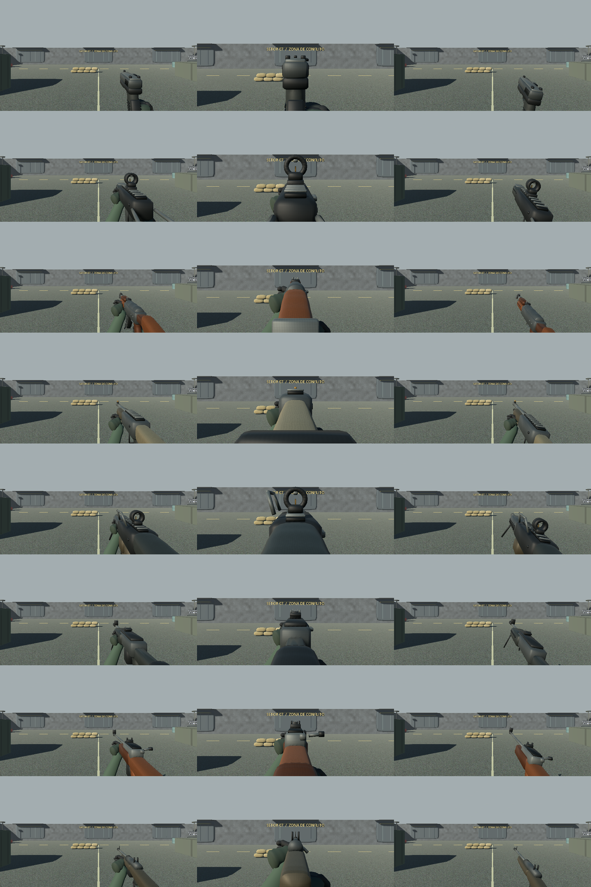

Asset Studio WebGL real · GLBs originais de produção · antes = 403fc35,
depois = fonte híbrida rebuildada · vistas ortográficas e perspectiva 1280×800 · zero requisição
externa, zero erro de console (before-report.json / after-report.json).
Cada célula é o GLB servido pelo Studio, com o mesmo enquadramento e iluminação sintética.
24 poses capturadas da viewport OpenGL do jogo real (AMD Radeon iGPU, Compatibility, 1280×720). Uma linha por arma; colunas repouso, ADS e recarga. Não é aprovação de playtest Windows.

godot-arsenal.json| Arma | Triângulos antes | Triângulos depois | AABB medida (X × Y × Z, m) | Desvio de envelope |
|---|
Teto provisório LOD0 = 18 000 triângulos. AABB é a do arquivo mesclado; a escala do viewmodel não é compensada na geometria.